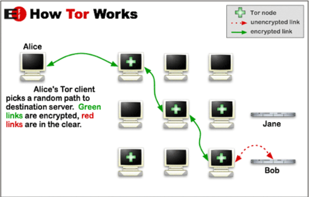
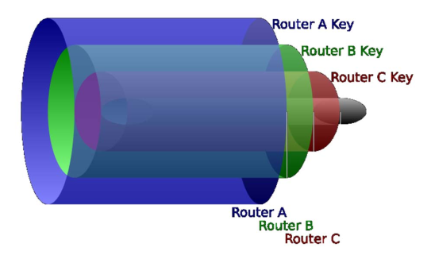

Deep Web
Mikel Egaña Aranguren
Indice
- ¿Qué es la Deep Web?
- Formas de acceso
- Consejos de navegación
¿Qué es la Deep Web?
La red habitual y conocida (Clearnet):
- Está formada por direcciones conocidas (Ej: www.ehu.eus)
- Con contenidos en HTML que están indexados y permiten realizar búsquedas para encontrar lo que nos interese
¿Qué es la Deep Web?
La Deep Web (internet profunda) está formada por todos aquellos contenidos que no son directamente accesibles a través de internet
Se estima que de todo el contenido que existe:
- El 10% está en Clearnet (el internet que conocemos)
- El 90% está en la Deep Web
¿Qué es la Deep Web?
Contenido de la Deep Web
- Información confidencial o protegida (No suelen estar indexados por buscadores ni se puede acceder directamente a ellos):
- Registros sanitarios
- Registros académicos
- Datos bancarios
- ...
- Información "suelta": por ejemplor un archivo HTML que no esté enlazado desde ningún otro
- Información en formatos no HTML que un navegador no puede leer
¿Qué es la Deep Web?
Contenido de la Deep Web
- Contenido no publicable (Censura): Contenidos que no pueden publicarse libremente porque pueden
acarrear consecuencias
- Contenido ilegal y/o desagradable (Darknet)
- Tráfico de armas, drogas, personas
- Material pedófilo
- Malware
- Alquiler de hackers, matones, etc.
- Películas snuff
¿Qué es la Deep Web?
Niveles de la Web
- Nivel 1: Sitios web ampliamente conocidos y para todos los
públicos
- Nivel 2: Sitios web desconocidos y sitios pornográficos
- Nivel 3 (Aquí empieza Deep Web): Necesita privacidad y anonimato (contenidos sensibles)
- Nivel 4: Necesita un proxy. Nivel peligroso (contenidos ilegales)
- Nivel 5: Secretos gubernamentales y militares
- ???
Formas de acceso
Para acceder a la Deep Web hace falta un software especial que proporcione privacidad, anonimato y ejerza de proxy
Existen varias alternativas que darán acceso a distintos contenidos de la Deep Web: TOR, I2P, Freenet, Zeronet
TOR
The Onion Router (TOR)
Red de navegación anónima
Oculta el origen y el destino de los paquetes que navegan por la red (Aunque hay formas de acabar identificando el origen)
Para acceder a TOR se necesita un software específico:
- TOR Browser: navegador web
- Tails (The Amnesic Incognito Live System): Sistema operativo que se ejecuta desde un USB o CD
TOR
Cada vez que hay que hacer una conexión, se calcula un camino
aleatorio basado en los nodos de la red

TOR
La información se cifra a capas (como una cebolla) con las claves públicas de los distintos nodos, de modo que cada nodo sólo puede ver cuál es el siguiente

TOR
Utilizando la red TOR se puede acceder a URLs que son
inaccesibles de otro modo:
- Dominio .onion
- URLs alfanuméricas: http://3g2upl4pq6kufc4m.onion/
Para encontrar contenidos hay que usar buscadores específicos o sitios donde se recopilen las URLs:
- Buscador Torch (http://xmh57jrzrnw6insl.onion/)
- The Hidden Wiki (http://kpvz7ki2v5agwt35.onion )
I2P (Invisible Internet Project)
Es otra red para navegar de forma anónima
Para usarla es necesario instalar su router (https://geti2p.net/es/download)
Utiliza una base de datos distribuida con los distintos nodos de
la red
I2P (Invisible Internet Project)
Cada nodo tiene unos túneles de entrada y otros de salida,
cada uno de ellos formado por dos nodos
Se decide el camino en base a la base de datos distribuida

I2P (Invisible Internet Project)
Utiliza el protocolo de enrutado Garlic
La información se cifra a capas indicando el camino a seguir
Se pueden agrupar varios mensajes (como los dientes de un ajo)
que se cifran y descifran juntos (el ajo entero)

I2P (Invisible Internet Project)
Utilizando la red I2P se puede acceder a URLs que son
inaccesibles de otro modo (Llamados eepsites):
- Dominio .i2p
- URLs alfanuméricas pero “entendibles” : http://lawiki.i2p
Se usa un fichero de nombres local llamado addressbook
Se pueden incluir nuevas direcciones, acceder a repositorios de
direcciones, etc.
Buscador: http://eepsites.i2p
Recopilación de URLs: I2P Name Registry (http://inr.i2p)
Freenet
Es una red distribuida de almacenamiento de información que
proporciona anonimato
Es una red P2P no estructurada. Los nodos no tienen jerarquía:
- Pueden tener el contenido que se busca
- Pueden redireccionar a otro nodo para encontrarlo
Para usarla hay que descargar un software especial
(https://freenetproject.org/)
Hay que configurar el ancho de banda que se quiere compartir
Freenet
Se puede elegir a qué nodos conectarse:
- Todos / amigos
- En función de a qué nodos nos conectemos el contenido al que
tendremos acceso será mayor o menor
Freenet
Al publicar un contenido en Freenet, se replica por los nodos
Existen sitios recopilatorios de contenidos:
- Enzo’s index (organizados por categorías)
- The Filtered Index (no contenido sensible)
Zeronet
Es una red distribuida de almacenamiento de información SIN
anonimato (Se recomienda usar Tor para conseguir anonimato)
Es una red P2P no estructurada. Los nodos no tienen jerarquía:
- Pueden tener el contenido que se busca
- Pueden redireccionar a otro nodo para encontrarlo
Para usarla hay que descargar un software especial
(https://zeronet.io/)
Zeronet
Su contenido se publica a través de URLs generadas por la
tecnología de bitcoin:
- Dominio .bit
- Son llamados zites
Consejos de navegación
No usar Windows
Usar maquinas virtuales o live USB
No descargar nada que no sea 100% seguro
No subir documentos (cuidado con los metadatos)
No conectarse a servicios habituales (Redes sociales, correo, ...)
No hacer nada ilegal